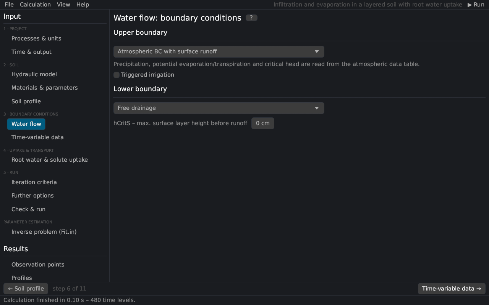

Input (pre-processing)
Water flow boundary conditions
The page sets the boundary conditions of the water flow at the soil surface and at the bottom of the profile (the Water Flow Boundary Conditions dialog of HYDRUS-1D). The equations are in boundary conditions.


Upper boundary
| Condition | Description |
|---|---|
| Constant pressure head | The head of the top node keeps its initial value (set it on the page Soil profile). |
| Constant flux | A constant flux rTop [L/T]; negative = infiltration. |
| Atmospheric BC with surface layer | Precipitation and potential evaporation from the time-variable data; water that cannot infiltrate ponds at the surface up to hCritS and then runs off; evaporation is limited by the dry limit hCritA Neuman et al. (1974). |
| Atmospheric BC with surface runoff | As above without ponding: excess water runs off immediately. |
| Variable pressure head | Head hTop of the time-variable data. |
| Variable flux | Flux Evap − Prec of the time-variable data. |
| Variable pressure head / flux | Each record decides with the code in the Evap column (positive: head, negative: flux). |
hCritS is the maximum height of water at the surface before runoff (with the surface layer; 0 = no ponding). Constant potential transpiration is the potential transpiration with constant boundary conditions and root water uptake.
Triggered irrigation
With an atmospheric upper boundary, irrigation can be triggered by the pressure head at an observation node Šimůnek et al. (2016):
| Input | Description |
|---|---|
| Observation node | number in the list of observation nodes (1 = first) |
| Pressure head triggering irrigation | threshold [L]; the irrigation is triggered when the head falls below it |
| Irrigation rate | [L/T] |
| Irrigation duration | [T] |
| Lag time | time between the trigger and the start [T] |
| Behaviour | As HYDRUS 4.17: the rate replaces the precipitation; the next atmospheric record ends the irrigation, and its end removes the precipitation until the following record. Full duration: the rate is added to the precipitation for the whole duration (Rusteau option, not stored in HYDRUS-1D projects). |
The irrigation events are written to IRRIG.csv (output files).
Lower boundary
| Condition | Description |
|---|---|
| Constant pressure head | The head of the bottom node keeps its initial value (e.g. a groundwater table). |
| Constant flux | A constant flux rBot [L/T]; positive = upward (into the profile). |
| Variable pressure head / flux | hBot or rBot of the time-variable data. |
| Free drainage | Unit hydraulic gradient: the water leaves with the conductivity of the bottom node; for deep water tables. |
| Deep drainage | q = −Aqh exp(Bqh |h − GWL0L|) with the reference groundwater level GWL0L Hopmans and Stricker (1989). |
| Seepage face | No flux while the bottom is unsaturated; drains at the head hSeep (usually 0) when saturated; lysimeters and columns with an open bottom. |
| Horizontal drains | Discharge to parallel drains or ditches after Hooghoudt (1940) and Ernst (1962), as implemented in SWAP van Dam et al. (1997). |
Horizontal drains
| Input | Description |
|---|---|
| Drain geometry / configuration | 1 homogeneous profile, drain on the impervious layer; 2 homogeneous, above the impervious layer; 3 layered, drain at the interface; 4 layered, drain in the bottom layer; 5 layered, drain in the top layer |
| Elevation of the drain bottom | z coordinate [L] (negative) |
| Drain spacing | distance between the drains [L] |
| Entrance resistance | [T] |
| Elevation of the impervious layer, wet perimeter | configurations 2–5 |
| Kh above / below the drain, Kv top / bottom, depth of the layer interface, geometry factor | conductivities of the layers, depending on the configuration |
See also: time-variable boundary data · boundary conditions (theory)
Literature cited in this topic
- Ernst, L. F. (1962). Grondwaterstromingen in de verzadigde zone en hun berekening bij aanwezigheid van horizontale evenwijdige open leidingen. Verslagen van Landbouwkundige Onderzoekingen 67(15), Pudoc, Wageningen, 189 pp.
- Hooghoudt, S. B. (1940). Bijdragen tot de kennis van eenige natuurkundige grootheden van den grond, 7. Algemeene beschouwing van het probleem van de detail ontwatering en de infiltratie door middel van parallel loopende drains, greppels, slooten en kanalen. Verslagen van Landbouwkundige Onderzoekingen 46(14)B: 515–707.
- Hopmans, J. W., and J. N. M. Stricker (1989). Stochastic analysis of soil water regime in a watershed. Journal of Hydrology 105(1–2): 57–84. doi:10.1016/0022-1694(89)90096-6
- Neuman, S. P., R. A. Feddes, and E. Bresler (1974). Finite Element Simulation of Flow in Saturated-Unsaturated Soils Considering Water Uptake by Plants. Third Annual Report, Project No. ALO-SWC-77, Hydraulic Engineering Laboratory, Technion, Haifa, Israel.
- van Dam, J. C., J. Huygen, J. G. Wesseling, R. A. Feddes, P. Kabat, P. E. V. van Walsum, P. Groenendijk, and C. A. van Diepen (1997). Theory of SWAP Version 2.0. Report 71, Department of Water Resources, Wageningen Agricultural University, Wageningen, 167 pp.
- Šimůnek, J., M. Th. van Genuchten, and M. Šejna (2016). Recent developments and applications of the HYDRUS computer software packages. Vadose Zone Journal 15(7). doi:10.2136/vzj2016.04.0033
All sources: References.